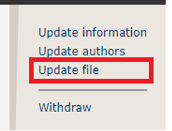

In order to finalize the procedure of publication of their accepted contribution, the authors have to complete the following two steps:
You should submit a single ZIP file containing ALL your source files (e.g., *.tex, *.bib, *.sty, and all figures for Latex Users or the .docx file for Word users). In order to upload these files into TAPS, follow the instructions in the following tutorial Final Submission and TAPS Author Workflow. The ZIP file naming should be as follows: DEBS-PaperId.zip. It is important to follow all the instructions strictly for file structure and naming of the ZIP file that should be uploaded to TAPS.
The publishing system automatically produces the traditional PDF output and ACM's new responsive HTML5 design. Within 24 hours after submitting the .zip file, the contact author will receive the 'PDF and HTML Proofs: available for review' email notifying that the proofs for the published versions of your paper (both PDF and HTML5 versions) are available for your review and approval. Note that TAPS will generate the output PDF using the double-column format, which follows the “sigconf” proceedings template. TAPS receives the information from ACM's system regarding which composition layout needs to be followed for the papers in your proceedings (i.e., “sigconf” in this case) and applies the required style internally.
If you are satisfied with the proofs for the published versions, please notify us of your approval within The ACM Publishing System (TAPS). If you find that the PDF and/or HTML file(s) did not convert correctly, follow the instructions presented in the author dashboard.
If you have any questions or issues following the instructions above, please contact support at confsupport@aptaracorp.com for both LaTeX and Microsoft Word inquiries.
ACM accepts the submission of Auxiliary Materials – i.e. additional files not formally part of the publication – as an additional resource for the reader. ACM does not take copyright for these files, but to serve them, still needs permission from the owner and an agreement that the author is abiding by ACM's terms when supplying the files. If you intend to submit Auxiliary Materials, please check Part II of the e-Rights form and saying YES to the terms grants ACM permission to publish them.
ACM provides a template for Microsoft Word and a template for LaTeX. However, ACM is currently in the process of revamping its Word template. We highly recommend using the LaTeX template.
Please download the ACM “Interim Template” Word document (Interim layout.docx) from ACM here. There is also a sample PDF file produced with the Word template, which you can download here.
We strongly encourage you to review the sample file above so you will be aware of the mandatory sections, copyright strip information (see next step), formatting requirements, font requirements, font sizes, and spacing required for the final version.
The correct ACM DEBS 2025 copyright-permission notice needs to be inserted in the template, see page 1, bottom of column 1 before you submit your final version. The ACM rights management process will email the lead author this information when the online ACM copyright form is completed. There are three different forms of copyright block. ACM rights management system will automatically send you the correct copyright text based on the form you choose. A custom DOI URL will also be included in that email.
Please double-check that your produced document matches the details in the email sent to you by the rights management system, and that you have included your full DOI URL.
This statement must be in 7 point Linux Libertine font, with the first paragraph text justified, with DEBS‘25 (the venue acronym) in italics. Refer to the “Interim-layout.docx” sample file to view how the ACM copyright statement should appear -- you should preserve the original formatting.
Note: the main problem that occurs with submissions generated with pdflatex is that the fonts are not embedded properly. This most often occurs because vector images included from your LaTeX do not themselves embed their fonts.
Template: Please use the sigconf proceedings template from the ACM Master article template for LaTeX (acmart class) for your submission (under the LaTeX Authors section). Please follow the instructions given on the page, and please have a look / start from the sample file “sample-sigconf.tex” in the acmart package. Even if you have already downloaded the package for another conference, you should download it again as ACM often makes changes to their template and publishes new versions.
Fonts: Type 1 or TrueType fonts must be used (this will usually happen by default). Type 3 fonts are not permitted. TrueType fonts are permitted but will be tested for any problems which may need to be rectified. For help on obtaining the correct type of fonts, see this hint in the ACM FAQ list. Inserting the following commands before your \begin{document} will improve the page layout:
Camera-ready copyright header: The ACM copyright form will provide you with a block of LaTeX code to be included in the “Rights management information” section of the header. Please double-check that your produced document matches the details in the email sent to you by the rights management system, and that you have included your full DOI URL.
Please continue reading for additional information on preparing your final paper including the requirements for Page Size, File naming scheme, ACM classification sections, Images, Figures, Illustrations, 3rd Party Material Permissions, Bad Breaks, Creating an ACM compliant PDF, Optional accompanying thumbnail image and caption.
The page size for this ACM publication is US Letter Portrait (8.5×11 inches). Submissions that do not conform to the ACM SIG standards, templates, and formats will be returned to the author for corrections and/or alterations.
Must be in Initial Caps Meaning First Letter of the Main Words Should be Made Capital Letters
Prior to submitting, be sure to update the final version of your PDF to include all authors full names, and correct affiliation names, location, and other information under the title of the paper. See the first page of the ACM sample pdf.
Authors must include a brief summary (abstract) of their work in the first section of their submission after the title, authors, and affiliation information on the first page. See the first page of the ACM sample pdf.
Authors must include all works cited in their submission in a References section at the end of the paper or extended abstract. See page 4 of ACM sample pdf. Also refer to the ACM citation style and reference formats.
The Categories and Subject Descriptors and Keywords are mandatory by ACM on the first page of your submission after the Abstract. See the first page of the ACM sample pdf for information about how these two sections should appear in your submission.
Read this section carefully. Your selections for the three sections are mandatory on the submission page when submitting your final version.
Categories and Subject Descriptors (Mandatory for the first page of your paper): Make sure that your selection included on the first page of your paper are also chosen accordingly on the submission page. Click here for information on the ACM Computing Classification Scheme. The new templates enable you to import required indexing concepts for your article from the ACM Computing Classification System (CCS) using an indexing support tool found in the ACM Digital Library (DL) which generates the necessary LaTeX code once you have selected your terms.
Keywords: This section is your (author) choice of terms that you would like used to index your work.
Be sure you do not have bad page breaks or bad column breaks. One example of a bad column break is a widow, which occurs when the last line of a paragraph that begins at the bottom of one column appears by itself at the top of the next column). If this happens, tighten the previous column to bring it back, or force an additional line of text over to the next column.
Also make sure that Section and Sub-section headings have at least two lines of body text below them when they appear at the end of a page or column.
In the event, any element used in your material contains the work of third parties, it is the author/presenter's responsibility to secure any necessary permissions and/or licenses, and the authors will provide the same permissions in writing to the ACM. If the copyright holder requires a citation to a copyrighted work, it is the authors' responsibility to include the correct wording and citations to the copyrighted material in their submissions.
Below are some recommendations to ensure good print reproduction of the images, figures, and illustrations utilized in your submission.
Colors and Black & White (Gray Scale) Print Testing. If you have any images in color, please print your paper out in black and white to ensure that the tones and screens used in your images or figures reproduce well in black and white, too. However, your images will appear in full color in any distributed electronic proceedings and in the ACM digital library.
Resolution & CMYK. Figures, charts, and diagrams should use a vector image format (e.g. PDF, SVG). Raster images (e.g. photographs) should be at least 300 or 600 dpi for quality reproduction and saved as .tiff images (or other compatible formats that support print-quality resolution). When creating or revising your images for inclusion in the paper, we recommend choosing CMYK (and not RGB) as the color profile.
TIFF/PNG versus JPG (JPEG) image. For raster images (e.g. photos), TIFFs are preferred for press applications where quality takes priority over file size. When TIFFs are compressed (using LZW compression option when saving from Adobe Photoshop, for example), no image data is lost, thus ensuring maximum quality. A JPEG is a compressed image format designed to keep the file size small, which makes it ideal for use in web graphics. However, to achieve this, the JPEG format actually removes precision from the image. This is referred to as a lossy compression system. On a printout, the removed data tends to show up as blocky areas of a solid color, or ghosting near high-contrast changes. At higher print resolutions (a minimum of 200 dpi), there's usually enough data in the JPEG file for the compression artefacts to be very noticeable.
Rules/Lines. Rules used in your graphs, tables or charts must be at least 0.5 point in stroke and black for quality reproduction. Finer lines and points than this will not reproduce well, even if you can see them on your laser printed hardcopy when checked — your laser printers will usually have a far lower resolution than the imagesetters that will be used.
Fonts. If your figure uses custom or any non-standard font, the characters may appear differently when printed in the proceedings. Remember to check your figure creation to ensure that all fonts are embedded or included in the figure correctly. Be sure that your images do not contain any Type 3 fonts.
Transparency. If a figure or image is assembled from multiple images, the images must be embedded, and layers be flattened or grouped together properly in the file. Transparency must be flattened.
Your final submission MUST NOT contain any footer string at the bottom of each page nor any page numbering. The submissions will be paginated in a determined order by the chairs and page numbers added to the PDF during the compiling, indexing, and pagination process.
Furthermore, your final submission MUST NOT contain any header string information at the top of the first page. On following pages, the header has to contain the conference information (left) and the author names (right) on even pages and the title (left) and the event information (right) on odd pages. Please make sure that the different information in the header does not overlap each other. If, for example, the list of authors is too long, you may use a more concise version such as “John Smith et al.” for the header. See pages 2-6 of the ACM sample pdf .
It is the contact or submitting author's responsibility to be sure that any funding or special contribution acknowledgements are included in the final version submitted as required by any research, financial, or other grants received (by using the “Acknowledgements” section before the References section). See page 4 of the ACM sample pdf .
When your final version is ready, you need to upload one ZIP file with the camera-ready PDF and source files using EasyChair . Please use the Update File function in your submission details and upload the ZIP file under Camera-ready Files. Please do not delete the original file!

You will receive a confirmation email sent to the corresponding contact's email address.
If changes are needed, you will be contacted by one of the publication coordinators in case you need to fix something. If this is true, you will receive specific information about how to revise your submission to meet requirements, and a new deadline will be given to submit the corrected material. You are required by the chairs to adhere to this NEW deadline so publication is not delayed.